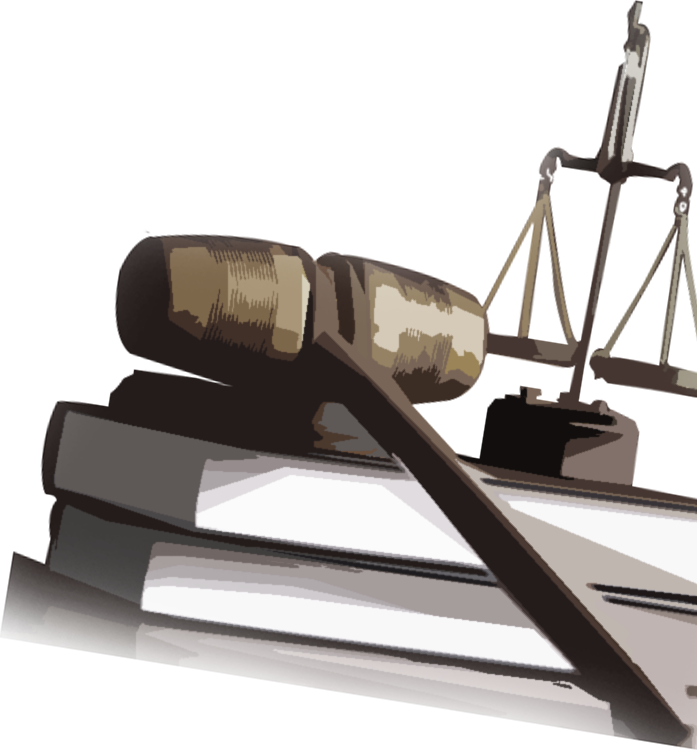

2020
-

- #비디오
- #불법촬영
- #커뮤니티
- #SNS
- #법개정
- #강력사건
- #테스트
사회 시대배경, 언론
주요사건
법 법제, 판결
1953
1. 잘못 낀 첫 단추
대한민국 최초의 형법은 성범죄를 ‘정조에 관한 죄’로 묶었다.
가해자의 죄와 함께 피해자의 ‘정조’를 물었다. 이 단어가 삭제되는 데 42년이 걸렸다.
‘피해자다움’을 요구하는 행태는 2020년까지 사라지지 않았다.
1953.09
제정 형법, '정조에 관한 죄' 규정
법은 보호할 가치가 있는 정조만 보호한다
사건 설명 더보기 +
1964
성폭행 가해자 혀 깨문 여성 징역형
법원이 성폭행 디소한 남성의 혀를 문 피해자에게 징역10월에 집행유예 2년 선고하다
1973
“이미 버린 몸” 성폭행 가해자와 피해자 약혼
대구고법 형사부가 성폭행 가해자와 피해자의 약혼을 종용하다
~1980년대
2. 포르노 출판, 상영 산업화
인터넷과 스마트폰 이전, '빨간 책' '빨간 비디오' 따위로 불린 출판물과 영상물이 여성에 대한 성적대상화, 왜곡된 성관념을 실어날랐다. 이들은 상업화돼 동시상영 영화로 상영되거나, 암시장에서 은밀히 거래됐다.
1974
빨간 책, 비디오 암시장
과거의 '향수'로 치부할 수 없는 '그들'만의 불법거래
사건 설명 더보기 +
1980년대 후반~1990년대 초반
3. 내몰린 피해자들
법은 멀고, 느렸다. 성범죄에 저항하다 가해자를 다치게 하면 피해자를 구속했다. 사법적 단죄를 위한 공소시효는 짧았다. 일부는 직접 보복에 나섰다. 그제서야 법이 바뀌었다. 바뀐 법도 피해자에 충분히 가깝진 않았다.
1988.9
안동주부 사건
'적당히' 저항하지 않은 죄로 감옥에 가다
사건 설명 더보기 +
1991.1
아동성폭행범 살해 사건
법적 처벌 막히자 극단적 선택, "나는 사람이 아닌 짐승을 죽였다"
사건 설명 더보기 +
1992.1
의붓딸 성폭행범 살해 사건
가해자가 만든 가해자
사건 설명 더보기 +
1993
4. 처음으로 성희롱을 묻다
직장 내 성희롱은 오랜 기간 피해자가 ‘알아서’ 대처할 문제였다.
1993년, 직장내 성희롱 사건이 처음 법정에 갔다. 한 걸음 나아갔지만 여성을 성적대상화하는 인식은 2018년 ‘미투’ 운동, 2020년 디지털성범죄 사태까지 이어졌다.
1993
서울대 신 교수 성희롱 사건
직장 내 성희롱 사건, 처음으로 법정에 가다
사건 설명 더보기 +
1994
성폭력특별법 제정
성폭력을 처벌하는 특별법이 처음 생기다
사건 설명 더보기 +
1990년대 말~
5. 수면위로 떠오른 불법촬영물
가구당 PC보급률과 인터넷 사용인구가 급등했다. 기술은 새로운 형태의 성범죄를 퍼뜨렸다. 촬영기기 악용, 인터넷망으로 급속히 번지는 피해. 디지털성범죄의 특성이 이때부터 나타났다. 피해자들이 오히려 고개를 숙여야 했다.
1997
고교생 집단성폭행 비디오 사건
피해 여중생도 소년원에 가야했다
사건 설명 더보기 +
1997
신촌 백화점 몰래카메라
화장실 불법촬영, 처벌근거도 없었다
사건 설명 더보기 +
1998
여성연예인 불법촬영물 사건
'X양 비디오'란 이름 아래 피해자가 지워졌다
사건 설명 더보기 +
2000
B양 비디오 사건
1999년~2000년대 초
6. 디지털성범죄 기업화
사이버공간에서 성범죄 영상을 유통, 소비하는 게 '일상'이 됐다. 범죄라는 인식도, 처벌도 미미했다. 초대형 디지털성범죄 사이트가 등장했다. '검거 - 플랫폼 이동 - 검거 - 플랫폼 이동'이라는 악순환이 시작됐다.
1999
소라넷 시작
‘디지털성범죄 가이드’가 된 불법의 온상
사건 설명 더보기 +
2004
위디스크 운영 시작
범죄 카르텔로 이어진 국내 최대 웹하드의 시작
사건 설명 더보기 +
2000년 중반~2010년
7. '흉악범'은 부각됐지만...
닷컴버블 시기와 맞물려 소라넷으로 대표되는 음란물 사이트와 P2P 업체들이 우후죽순 생겨났다. 디지털 성범죄 기업화의 시작이었다.
2004
밀양 집단성폭행 사건
엄벌 피한 가해자, 모욕당한 피해자
사건 설명 더보기 +
2008
조두순 사건
취한 상태였다고 처벌 낮춰준 법원
사건 설명 더보기 +
2010.02

김길태 사건
성폭행 전과에도 법망 피해 또 다시 범행
사건 설명 더보기 +
2010.06
김수철 사건
조두순, 김길태 사건 공분 가시기도 전에...
사건 설명 더보기 +
2010년대
8. 스마트폰 확산 악용한 디지털성범죄
무선 인터넷이 가능한 스마트폰 시대가 본격화했다. 각종 채팅 앱들이 생겼다. 디지털성범죄는 새 플랫폼을 악용해 '진화'했다. 랜덤채팅은 성범죄 통로가 됐다. 랜덤채팅으로 피해자를 유인하는 수법은 '텔레그램 성착취물 사태'까지 이어진다.
2013
랜덤채팅
신원을 숨기고 아동·청소년 성착취 통로를 열다
사건 설명 더보기 +
2013.12
AV스눕 운영 시작
'제2의 소라넷' 등장, 'N번방'이 자라고 있었다
사건 설명 더보기 +
2010년대 초반
9. '범죄 -반짝 이슈화- 범죄'의 악순환
성범죄는 빠르게 잊혀졌다. 잔혹한 범죄는 일부 '흉악범'의 이야기로 받아들여졌다. 공분이 모였다가, 제도를 조금 바꾸곤, 흩어졌다. '근본 대책'은 레토릭이 됐다. 다시 잔혹한 성범죄가 나오면 도돌이표처럼 이 과정을 반복했다.
2011.05

의대생 집단성추행 사건
피해자를 ‘인격장애’로 모는 2차 가해까지
사건 설명 더보기 +
2011.09

광주 인화학교 사건 재조명
잊혀지고, 또 잊혀졌다...때늦은 '도가니법'
사건 설명 더보기 +
2012.08

고종석 사건/나주 초등생 사건
'화학적 거세', 처음으로 적용되다
사건 설명 더보기 +
2014

지적장애 아동 ‘성매매 여성’ 낙인 사건
피해아동에게 '진짜 피해자 / 자발적 성매매 여성' 잣대를 대다
사건 설명 더보기 +
2010년대
10. 디지털성범죄와의 전쟁
닷컴버블 시기와 맞물려 소라넷으로 대표되는 음란물 사이트와 P2P 업체들이 우후죽순 생겨났다.
2015.01
소라넷고발프로젝트, #소라넷하니 운동
'N번방 아웃'까지 이어질 긴 여정의 시작
사건 설명 더보기 +
2015.03
관악구 여중생 살인사건
미성년자 성착취 살해의 도구가 된 랜덤채팅
사건 설명 더보기 +
2015
다크웹 '웰컴투비디오' 운영시작
세계 최대규모 아동성착취 영상 사이트가 시작되다
2015.11
정준영 불법촬영물 유포 시작
단체대화방에 동의없이 촬영한 성착취물을 올리기 시작하다
2010년대
11. 한 발 진전, 그러나...
닷컴버블 시기와 맞물려 소라넷으로 대표되는 음란물 사이트와 P2P 업체들이 우후죽순 생겨났다.
2016
소라넷 폐쇄
사건 설명 더보기 +
2016.05
강남역 살인사건
“나는 우연히 살아남았다”, 여성들의 분노 ‘여혐 살인’으로 모이다
사건 설명 더보기 +
2016
대학가 단톡방 성희롱 사건
사건 설명 더보기 +
2017년
12. 폐쇄해도 계속되는 반동
닷컴버블 시기와 맞물려 소라넷으로 대표되는 음란물 사이트와 P2P 업체들이 우후죽순 생겨났다. 디지털 성범죄 기업화의 시작이었다.
2017.04
AV스눕 폐쇄
제대로 처벌받지 않은 ‘제2의 소라넷’, ‘N번방 전신’이 되다
사건 설명 더보기 +
2017.5~

웹하드 카르텔과의 전쟁
‘국산야동’이란 이름의 사라지지 않는 피해촬영물
사건 설명 더보기 +
2018년
13. N개의 미투가 방증하는 것
닷컴버블 시기와 맞물려 소라넷으로 대표되는 음란물 사이트와 P2P 업체들이 우후죽순 생겨났다. 디지털 성범죄 기업화의 시작이었다.
2018.01
서지현 검사 미투
‘#미투’ 거대한 물결의 분기점이 되다
사건 설명 더보기 +
2018.02
최영미 시인, 고은 고발 인터뷰
온 힘으로 굴린 작은 바퀴, 문단 권력의 ‘대시인’을 멈추다
사건 설명 더보기 +
2018.02
연극계 미투
뿌리깊은 연극계 위계폭력, ‘제왕적 연출가’의 상습 성범죄를 낳다
사건 설명 더보기 +
2018.?

대학가 미투
“수많은 ‘알파벳’ 교수를 고발합니다”
사건 설명 더보기 +
2018.02
청주대 학생들, 배우 조민기 성추행 폭로
2018.02
배우 최율, 배우 조재현 성추행 폭로
2018.03

김지은씨 미투
“‘피해자다움’은 없다. 법은 성인지 감수성을 잃지 않아야”
사건 설명 더보기 +
2018.04

용화여고 스쿨미투
학교 창문에 붙은 ‘#ME TOO’, 스쿨미투의 시작
사건 설명 더보기 +
2018.05
양예원 스튜디오 성폭력 사건*
학교 창문에 붙은 ‘#ME TOO’, 스쿨미투의 시작
사건 설명 더보기 +
2019.01
심석희, 조재범 전 코치 성폭력 폭로
2019.01
신유용, 고교 유도부 코치 성폭력 폭로
2019년
14. 뒤안길에서 자라던 것과 스러진 이들
닷컴버블 시기와 맞물려 소라넷으로 대표되는 음란물 사이트와 P2P 업체들이 우후죽순 생겨났다. 디지털 성범죄 기업화의 시작이었다.
2019.02~
텔레그램 성착취 사건
제대로 처벌받지 않은 ‘제2의 소라넷’, ‘N번방 전신’이 되다
사건 설명 더보기 +
2019.03
정준영 단톡방 성착취물 공유 사건
‘국산야동’이란 이름의 사라지지 않는 피해촬영물
사건 설명 더보기 +
2019.10
다크웹 ‘웰컴 투 비디오’ 사건
세계 최대규모 아동성착취물 사이트 운영자, 뒤늦게 알려진 솜방망이 처벌
사건 설명 더보기 +
2019.10
설리 사망
2019.11
구하라 사망
2020년
15. 대전환, 시작일까
닷컴버블 시기와 맞물려 소라넷으로 대표되는 음란물 사이트와 P2P 업체들이 우후죽순 생겨났다. 디지털 성범죄 기업화의 시작이었다.
2020.03
N번방 사태
제대로 처벌받지 않은 ‘제2의 소라넷’, ‘N번방 전신’이 되다
사건 설명 더보기 +
1988.9
안동주부 사건
‘적당히’ 저항하지 않은 죄
대구지방법원 안동지원 형사합의부는 1988년 9월 21일 강제로 입맞춤하려는 남성 신모씨(당시 19)의 혀를 깨물어 자른 여성에게 유죄를 선고했다. 죄명은 상해죄, 징역6월에 집행유예 1년이었다.
재판부는 ‘혀를 깨무는 정도로 위기를 벗어날 수 있었다’, ‘범인이 흉기를 소지하지 않았다’ 등의 이유를 들어 정당방위의 범위를 넘어섰다고 했다. 사건은 신씨와 또다른 가해남성 등 두 명이 도리어 피해자를 고소하면서 알려졌다. 검찰은 여성을 구속기소하고 징역형을 구형했다.
태그